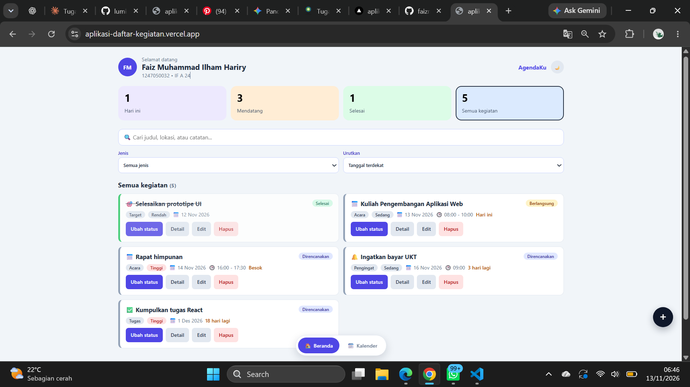
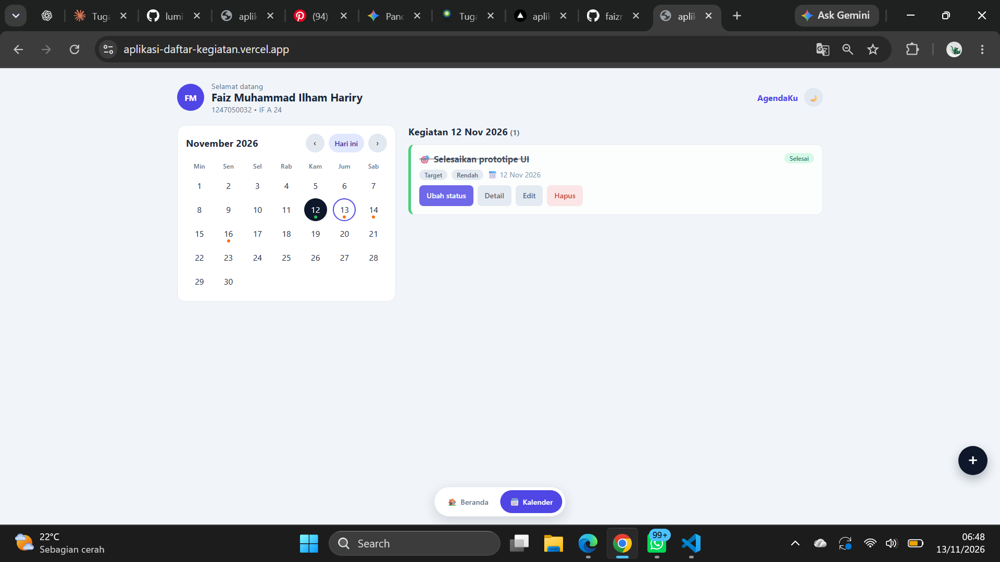

Screenshot Tampilan Aplikasi AgendaKu
Dokumentasi tangkapan layar antarmuka pengguna (UI/UX) dan fitur interaktif React.
Tampilan Utama Dashboard AgendaKu
Menunjukkan kartu statistik, informasi profil mahasiswa (Nama & NIM), kolom pencarian, filter, dan kartu daftar kegiatan yang responsif.

Tampilan Fitur Kalender Interaktif
Menunjukkan fitur navigasi kalender harian untuk memantau jadwal kegiatan berdasarkan tanggal yang dipilih.
